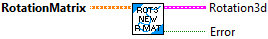
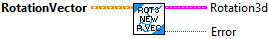
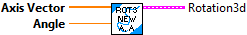
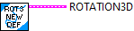
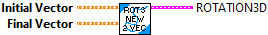
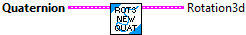
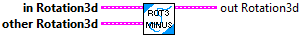
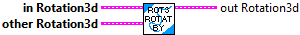

Constructs a Rotation3d from a rotation matrix.
Inputs::
-- rotationMatrix -- The rotation matrix
Returns:
-- Rotation3d -- The created Rotation3d data cluster
-- Error -- TRUE indicates an error occured.

Constructs a Rotation3d from a rotation vector (3,1).
Inputs::
-- rotationVector -- The rotation vector
Returns:
-- Rotation3d -- The created Rotation3d data cluster
-- Error -- TRUE indicates an error occured.

Constructs a Rotation3d with the given axis-angle representation. The axis doesn't have to be normalized.
Parmeters:
- Axis -- The rotation axis.
- Angle -- The rotation around the axis in radians.
Returns
-- Rotation3d -- The resulting rotation3d data cluster.

Constructs a Rotation2d with the given radian value. The x and y don't have to be normalized.
Parmeters:
- value - The value of the angle in radians.
Returns
- rotation data structure

Constructs a Rotation3d that rotates the initial vector onto the final vector.
This is useful for turning a 3D vector (final) into an orientation relative to a coordinate system vector (initial).
Parmeters:
- initial -- The initial vector.
- last -- .The final vector
Returns
- rotation data structure

Constructs a Rotation3d from a quaternion.
Parmeters:
-Quaternion - The quaternion to convert to Rotation3d.
Returns
- Rotation3d -- Rotation3d data structure
Constructs a Rotation3d from extrinsic roll, pitch, and yaw.
Extrinsic rotations occur in that order around the axes in the fixed global frame rather than the body frame.
Parmeters:
- Roll -- The counterclockwise rotation angle around the X axis (roll) in radians.
- Pitch -- The counterclockwise rotation angle around the Y axis (pitch) in radians.
- Yaw -- The counterclockwise rotation angle around the Z axis (yaw) in radians.
Returns
- Rotation3d -- The resulting rotation3d data cluster

Divides the current rotation by a scalar.
Parameters:
- IN ROTATION3D - This ROTATION3D data structure
- SCALAR - The value to divide the rotation by.
Returns:
- OUT ROTATION3D - THe new ROTATION3D data structure.

Checks equality between this Rotation3d and another object.
Parameters:
- IN ROTATION3D -- This rotation3d data structure
- OTHER ROTATION3D -- The rotation3d to compare.
Returns:
- Equals -- Returns TRUE if the two rotation3ds are equals.

Returns the axis in the axis-angle representation of this rotation and the angle in radians in the axis-angle representation of this rotation.
Parameters:
- in ROTATION3D - This ROTATION3D data structure
Returns:
- Axis -- The axis in the axis-angle representation.
- Angle -- The angle in radians in the axis-angle representation of this rotation

Returns the quaternion representation of the Rotation3d.
Parameters:
- in ROTATION3D - This ROTATION3D data structure
Returns:
- out Quaternion -- The quaternion representation of the Rotation3d.

Returns the counterclockwise rotation angle around the X axis (roll) in radians and the counterclockwise rotation angle around the Y axis (pitch) in radians and the counterclockwise rotation angle around the Z axis (yaw) in radians.
Parameters:
- in ROTATION3D - This ROTATION3D data structure
Returns:
- X -- The counterclockwise rotation angle around the X axis (roll) in radians.
- Y -- The counterclockwise rotation angle around the Y axis (pitch) in radians.
- Z -- The counterclockwise rotation angle around the Z axis (yaw) in radians.

Interpolates between 2 Rotation3d.
Parameters:
- IN ROTATION3D -- This rotation3d data structure
- End Value ROTATION3D -- The end rotation3d
- T -- Interpolation value between 0 and 1.
Returns:
- Interpolated Rotation3d -- The Rotation3d interpolated betwee the 2 provided interpolations.

Subtracts the new rotation from the current rotation and returns the new rotation.
Parameters:
- in ROTATION3D - This rotation data structure
- other ROTATION3D - The rotation to subtract.
Returns:
- out ROTATION3D - The difference between the two rotations.

Adds two rotations together.
This function is the same as RotateBy.
Parameters:
- IN ROTATION3D - This rotation data structure
- OTHER ROTATION3D - The rotation to add.
Returns:
- OUT ROTATION3D - The sum of the two rotations.

Adds the new rotation to the current rotation.
This is the same as Plus.
Parameters:
- IN ROTATION3D - This ROTATION data structure
- OTHER ROTATION3D - The rotation to rotate by
Returns:
- OUT ROTATION3D - The new rotated Rotation3d.

Multiplies the current rotation by a scalar.
Parameters:
- IN ROTATION3D - This ROTATION3D data structure
- SCALAR - The value to multiiply the rotation by.
Returns:
- OUT ROTATION3D - THe new ROTATION3D data structure.

Returns a Rotation2d representing this Rotation3d projected into the X-Y plane
Parameters:
- IN ROTATION3D -- This ROTATION3D data structure
Results:
-- out Rotation2d -- A Rotation2d representing this Rotation3d projected into the X-Y plane.

Takes the inverse of the current rotation.
Parameters:
- IN ROTATION3D - This ROTATION3D data structure
Results:
- OUT ROTATION3D - The negated ROTATION3D data structure.